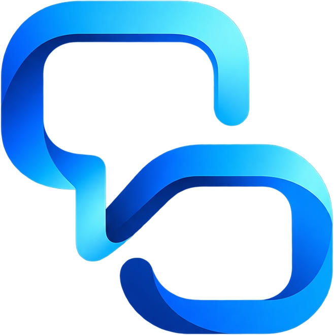
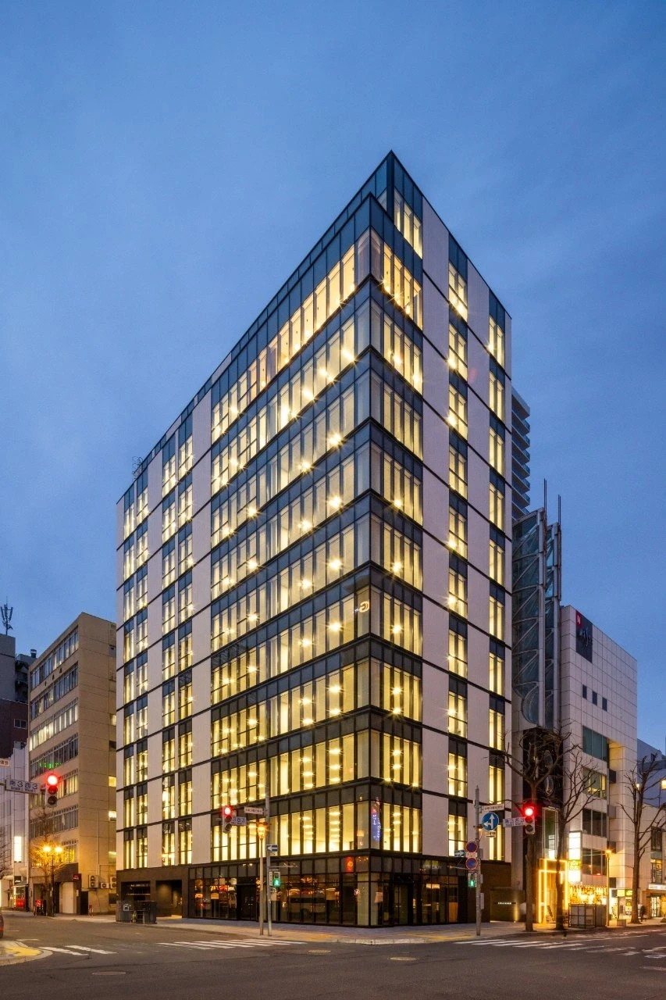

インサイドセールス
時給: 1,500円〜3,000円

時給: 1,500円〜3,000円
月給: 30万円〜50万円
月給: 5万円〜20万円
業界トップクラスの時給水準。実績に応じた昇給制度あり。
在宅ワーク可能、週2日〜勤務OK。ライフスタイルに合わせた働き方が可能。
業務委託の方向けに税理士の紹介、Barの割引、資産形成のサポートなど充実。
急成長中の企業で、早期からマネジメントに挑戦できるチャンスあり。
業務委託を含む150人のメンバーから、
人材系企業、SaaS・DX支援ツール、
営業代行会社、インサイドセールス支援、
メディア・広報・PR、Web制作・広告など、
幅広い業界での実績がございます。
東証プライム上場企業やDMMグループをはじめ、
100社以上の企業様にサービスをご提供しています。
ZERO COMMUTE. TOP RESULTS.
在宅ワーク可能、週2日〜勤務OK。ライフスタイルに合わせた働き方が可能。
11年前、通信商材を扱う会社で社内1位を取って、当時はただ「数字を追うこと」が全てだと思っていた。
でも、月日が経つにつれて
"嘘をつかないと契約が取れない"
そんな現実に嫌気がさして、
一度はこの業界を離れました。
それでも、僕の地元・北海道には今も同じような環境で頑張っている営業マンがたくさんいます。
だけど——
商材も手法も、10年前と何も変わっていない。
特に、子育て中のママや、冬場に街中まで通うのが大変な地方の営業職の方たち。
本当は優秀なのに、「環境のせいでチャンスを諦めている」人が多いんです。
だから僕は、もう一度この業界に戻ることを決めました。
東京で扱われているSaaS商材を、北海道に"輸入"するような形で届けたい。
フルリモートという新しい働き方を、経験のある人たちにもう一度手渡したい。
環境のせいで挑戦をやめてしまった人に、「再スタートのきっかけ」を届けたい。
これが、僕が新しく立ち上げた"株式会社Insup"の原点です。
ご来社・ご訪問・商談の際は、サザンクロス札幌10階のラウンジスペースでお迎えします。大きな窓のある明るい空間で、ゆったりとお話しいただけます。

下記のいずれかの方法でご応募ください。